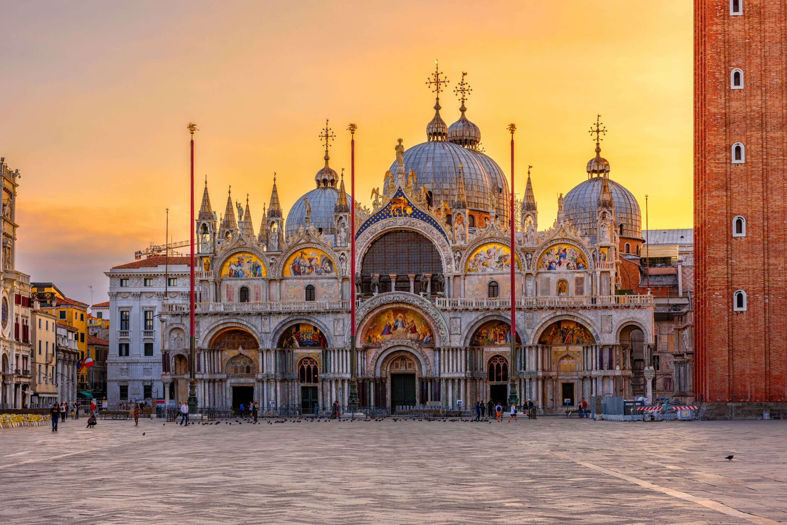
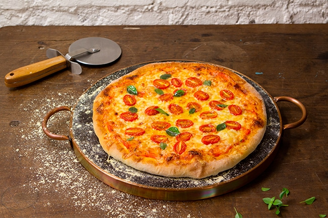
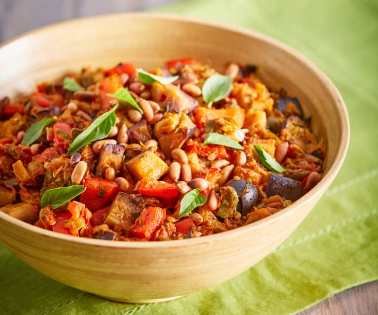

Monumentos
Pratos Típicos
Coliseu
O Coliseu tem um lugar de destaque entre estes monumentos famosos e é o mais visitado de Itália. Construído no século I A.C., continua a ser um dos grandes símbolos do Império Romano. O seu interior é enorme e imponente, o que permite aos seus visitantes reviver parte da glória do maior império da história.

Pesto alla genovese
Originário de Gênova, o molho pesto transcendeu esta cidade costeira italiana para se tornar um dos melhores companheiros internacionais da massa. Esta especialidade simples e deliciosa, feita com manjericão, alho, sal, queijo parmesão, nozes e azeite de oliva, tem um sabor intenso e sumptuoso que atravessou fronteiras.
Fonte de Trevi
A Fontana di Trevi, desenhada em 1732 por Nicola Savi, é uma das mais belas fontes do mundo. Esta espetacular e surpreendente obra de Salvi mantém o seu encanto original e foi cenário de vários filmes, como “La Dolce Vita” de Fellini, “Roman Holiday” com Audrey Hepburn e Gregory Peck ou o clássico italiano “Totòtruffa 62”, no qual um comediante napolitano vende a fonte a um rico e ingénuo turista americano.

Bistecca alla fiorentina
Atenção carnívoros. Bistecca alla fiorentina é uma tradicional carne de vitela toscana em formato de bife, caracterizada pela sua espessura e pelo fato de conter o osso. Geralmente é grelhada com azeite de oliva, pimenta preta, ervas aromáticas, e as porções são de até 500 gramas! O melhor acompanhamento é com o vinho Chianti. Um prato obrigatório quando você for visitar Florença, Siena ou Pisa.

Ponte Vecchio
Ponte Vecchio (ou “Ponte Velha” em italiano) é a ponte mais antiga de Florença e a única a cruzar o rio Arno até 1218. Entre as suas caraterísticas mais importantes destacamos o facto de que não se parece a uma ponte convencial, as lojas artesanais que se encontram ao longo da ponte e pela entrada secreta, utilizada no século XVI pelos Medici. As lojas de Ponte Vecchio têm uma única janela e portas de madeira grossa, que se abrem para a sua entrada central.

Cacio e Pepe
Cacio e pepe é o nome dado a um prato típico de massa romana. Significa “queijo e pimenta” em dialeto romano, pois o molho é feito de pimenta preta e queijo pecorino. Quanto à massa, você pode usar espaguete tonnarelli ou macarrão fino. Simples e recheada, as origens desta refeição remontam aos dias em que a população romana vivia na pobreza.

Torre de Pisa
A Torre di Pisa é um símbolo e ícone italiano. Impressionante, curiosa e visitada por milhões de turistas todos os anos, é a fonte de milhares fotografias engraçadas nas quais os protagonistas parecem suportar o peso desta torre inclinada. O que provavelmente desconheces é a Piazza dei Miracoli, que rodeia a Torre e que é igualmente incrível.
Ribollita
O Ribollita é um prato “pobre”, mas muito substancial. Típico das regiões de Siena, Florença e Pisa, é uma sopa de restos de pão e vegetais, à qual pode ser acrescentado todo o tipo de sobras. O prato tem origem rural e o nome sugere o método de preparo: é uma sopa que foi preparada em grande quantidade e nos dias seguintes pode ser reaquecida. Perfeita para os dias de inverno!
Duomo
O Duomo di Milano, a imponente catedral gótica de Milão, foi construída com mármore branco-rosa das minas de Candoglia e tem capacidade para 40.000 pessoas. Neste cenário impressionante, na praça com o mesmo nome, podes admirar a estátua da Madonnina, situada no topo mais alto.

Risotto alla milanese
O risoto é outro prato essencial na cozinha italiana. Como seu nome sugere, ele é originário de Milão e se destaca pela cor amarelada que lhe é dada pelo açafrão, seu sabor delicado e suave é inconfundível. Conta a lenda que um discípulo do pintor Valerio di Fiandra, que trabalhava no Duomo de Milão, quis surpreender seus convidados no banquete de casamento e preparou arroz com o açafrão que usava como corante de vidro manchado. Felizmente, era um corante comestível!
Basílica de São Marcos
A Basilica di San Marco é, sem dúvida, um dos monumentos mais importantes de Itália. Situada no extremo da Piazza San Marco, conecta-se ao Palazzo del Doge. Este monumento é também famoso por ter o mesmo encanto que rodeia toda a cidade de Veneza. A pé ou em gôndola, não podes deixar de ir até à Basílica para uma visita.
Pizza
Você prefere uma pizza de massa grossa ou fina? A primeira, macia e esponjosa, foi criada em Nápoles. Já a segunda, fina e crocante, teve origem em Roma. Com a adição de molho de tomate, queijo e condimentos a gosto, a pizza triunfou até se tornar um dos alimentos mais difundidos no mundo, que hoje pode ser encontrado em um número infinito de versões e variedades, e é um dos fast foods por excelência.
Duomo di Monreale
O Duomo di Monreale é uma das atrações mais importantes de Sicília. Esta obra monmental que inclui a Basílica, o palácio real e uma abadia Benedita, foi ordenada pelo Rei Enrique II, rei da Dinastia Normanda de Sicília e, em 2015, foi declarada Património Mundial pela UNESCO. A Catedral de Monreale e o quarto lugar histórico mais visitado na ilha, o mais visitado da província de Palermo.
Caponata
Caponata é uma especialidade siciliana que consiste em beringela assada junto com outros vegetais (pimentas, cenouras, batatas, etc.), formando uma salada que é vestida com vinagre, alcaparras e molho agridoce. Hoje em dia é muitas vezes servida como entrada ou acompanhamento, especialmente com pratos de peixe. Existe também uma versão napolitana de caponata, conhecida como ‘cianfotta’.
Arena
A Arena, um anfiteatro romano, é, sem dúvida, o monumento mais representativo da cidade de Verona. Foi construída a finais do século I A.C. para celebrar lutas de gladiadores, famosas na Antiga Roma. Este monumento, contudo, está tão bem preservado que, hoje em dia, é o palco de concerto e de visitas de turistas de todo o mundo, que se deslocam a Verona para assistir a grandes espetáculos da temporada de ópera. Graças às suas peculiaridades arquitetónicas, a acústica da Arena faz com que seja possível realizar concertos sem utilizar nenhum tipo de amplificador de som.
Lasagna ao forno
A lasanha não é apenas a comida favorita de Garfield, é também um dos pratos mais internacionais da cozinha italiana. A receita mais típica é feita com folhas de massa intercaladas com molho à bolonhesa, molho bechamel e queijo, mas você pode ser criativo trocando o recheio por vegetais, peixe, etc.
Castel dell'Ovo
Castel dell'Ovo é a mais antiga fortaleza de Nápoles, situada numa ilheta conhecida como “Megaris” que se encontra em frente ao porto de Santa Lúcia. No século XII, foram erguidas estas fortificações pré-Normandas, nas ruínas da villa do general romano Lucio Licinio Lucullo, transformadas mais tarde num castelo por Frederico II e expandidas na Era Angevina, quando a fortaleza recebeu o nome de “Castel dell’Ovo”.
Tiramisú
Esta deliciosa sobremesa feita com mascarpone e café é um dos pratos típicos italianos mais amados em todo o mundo. Não se sabe ao certo se nasceu no Veneto ou Friuli-Venezia Giulia, mas provavelmente é uma invenção bastante recente, da qual há evidências escritas apenas desde a década de 1960.
Castel del Monte
O Castel del Monte, lugar de mistérios e magia, é uma fortaleza do século XIII, construída pelo Imperador Romano Frederico II, incluída, em 1996, na lista de lugares Património da Humanidade pela UNESCO. As suas estruturas são perfeitamente geométricas e o seu desenho lembra um labirinto, com três inscrições do imperador que ainda são visíveis.
Digestivo
Não é um prato em si, mas para terminar, tivemos que incluir um digestivo. Na Itália, um shot de limoncelo, grappa ou amaretto, entre outros, é um must para a digestão, e é a parte final do ritual gastronômico italiano. Não sabemos ao certo se esses licores têm propriedades digestivas, mas para onde você for, será oferecido um digestivo no final da refeição!